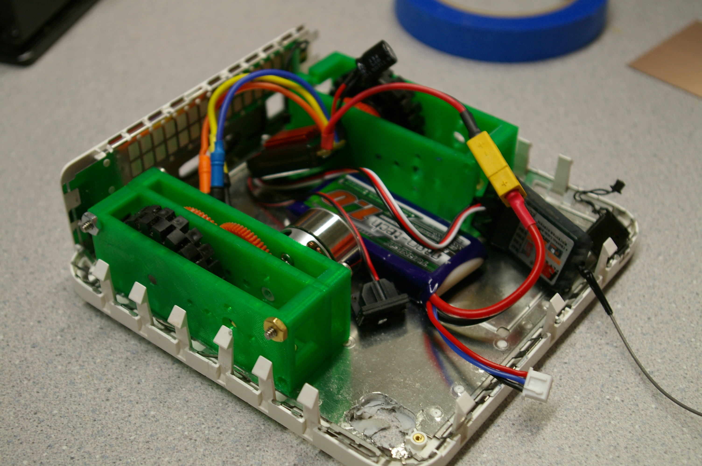

Hobby brushless motors are a wonderous thing. From this link 60 gram motor (LINK) around 200 watts of power are produced. What would happen if you link that up with a saw blade meant for cutting metal? It should make for a pretty mean combat robot weapon.
This first prototype is made from a 3d printed frame, a 5/16" bolt, and abec 7 skateboard bearings. The two pulleys, linked together with a polyurethane belt (LINK), were made on a lathe using a button tool (LINK) giving a gear ratio of ~2:1. Add to that the motor at 980 KV (rpm/volt) running off of a 11.1V lipo battery and we get a saw blade spinning at ~5000 rpm.  With full safety precautions in mind... we clamped the setup to a nearby metal railing and fired it up: frightening! The tiny brushless motor has no problem spinning up the blade to full speed - on the other hand the 3d printed frame and old railing were rather rattly; the blade and pulleys are likely unbalanced.
First up: piece of wood and some plastic.
VIDEO
No problem